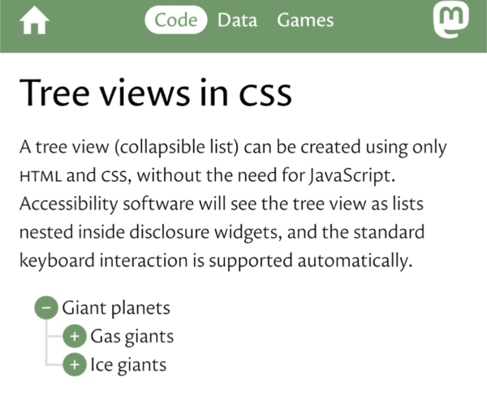
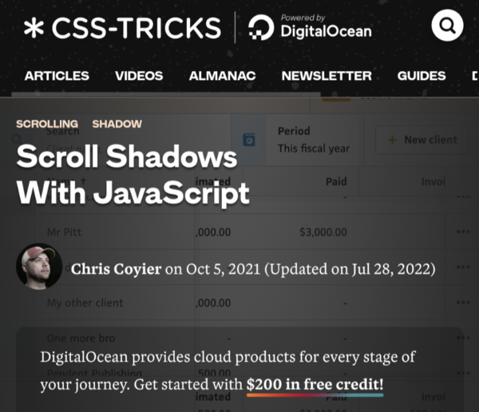
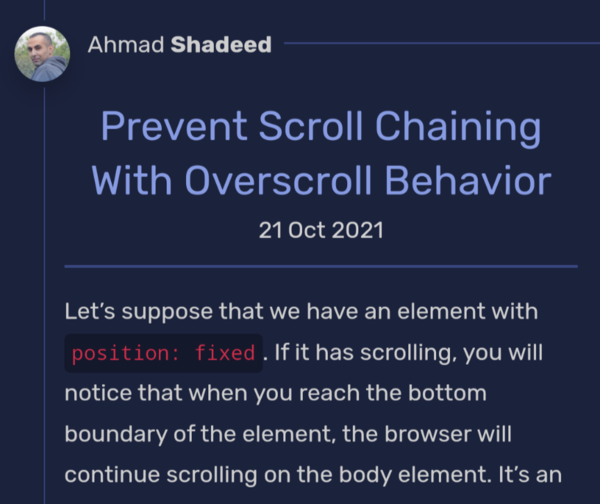
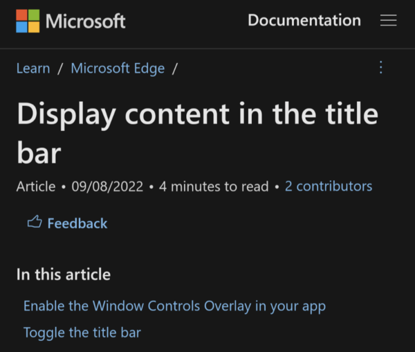
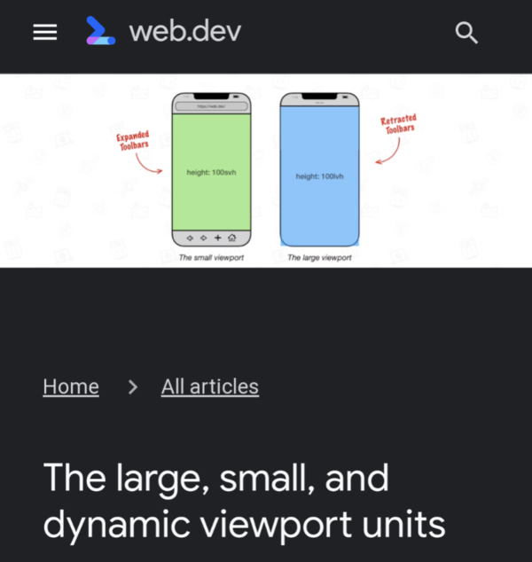
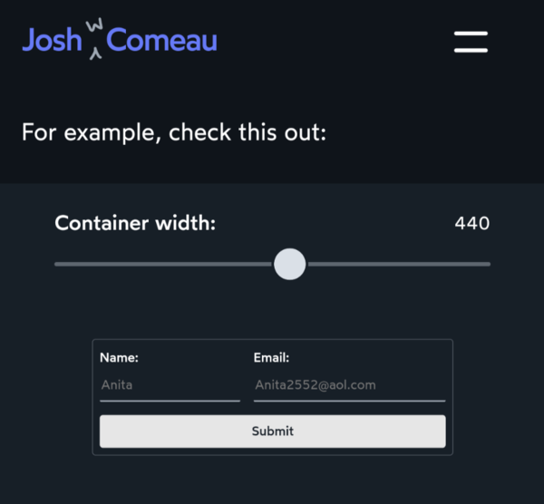
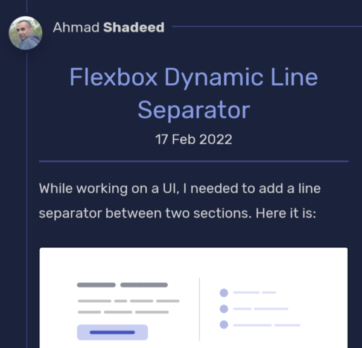
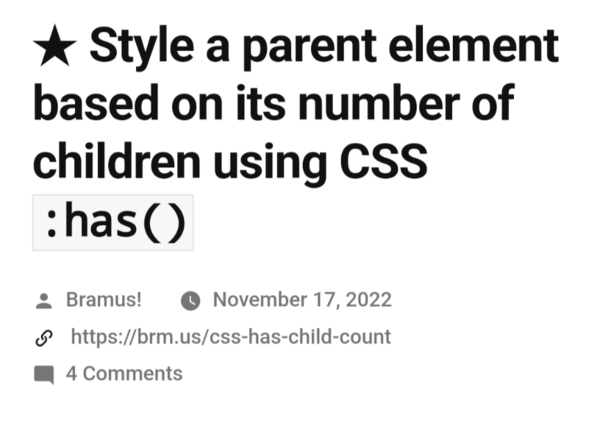
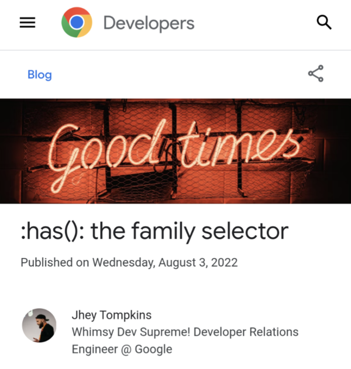

Discoveries #23 - UI/CSS
As a visual person, I’m always thrilled when I come across small but subtle tips, tricks or even entire solutions that lift my understanding of what can be done with CSS to new heights. Of course, this month :has() is once again one of them, but also once again contributions from Bramus van Damme and Ahmad Shadeed, whose posts I read without exception because they are both so good at what they do.
- Tree views in CSS
- Scroll Shadows With JavaScript
- CSS Mirror Editing in Edge DevTools for VS Code
- Prevent Scroll Chaining With Overscroll Behavior
- Display content in the title bar - Microsoft Edge Development
- The large, small, and dynamic viewport units
- An Interactive Guide to Flexbox in CSS
- Flexbox Dynamic Line Separator
- Style a parent element based on its number of children using CSS :has()
- :has(): the family selector
Tree views in CSS
by Kate Rose Morleyhttps://iamkate.com/code/tree-views/
Kate shows us how to create a tree view as collapsible list, created using only html and css, without the need for JavaScript
Scroll Shadows With JavaScript
by Chris Coyierhttps://css-tricks.com/scroll-shadows-with-javascript/
A good scrollable design shows the user if he can scroll further or not. Chris has an approach on that with pure CSS.
CSS Mirror Editing in Edge DevTools for VS Code
by Christian Heilmannhttps://christianheilmann.com/2021/09/16/css-mirror-editing-in-edge-devtools-for-vs-code/
How often do you fiddle around with CSS in Chrome's DevTools and copy the stuff back to your code? Christian shows how Mirror Editing works.
Prevent Scroll Chaining With Overscroll Behavior
by Ahmad Shadeedhttps://ishadeed.com/article/prevent-scroll-chaining-overscroll-behavior/
Dealing with scroll boundaries when you have many scrolling boxes on a page is a mess, until you have read Ahmad's advice regarding the use of 'overscroll-behavior'
Display content in the title bar - Microsoft Edge Development
by Microsoft Learnhttps://learn.microsoft.com/en-us/microsoft-edge/progressive-web-apps-chromium/how-to/window-controls-overlay
In PWAs, at least on the desktop, a lot of space is wasted with the title bar of the window. The use of 'display_override' should change that.
The large, small, and dynamic viewport units
by Bramus Van Dammehttps://web.dev/viewport-units/
The most used device on the Internet has long been the smartphone, but the visible area is trimmed by the browsers there from the necessary dynamic toolbars. To address this, there are new size units.
An Interactive Guide to Flexbox in CSS
by Josh Comeauhttps://www.joshwcomeau.com/css/interactive-guide-to-flexbox/
There are plenty of Flexbox tutorials, cheat sheets and generators, but Josh turns it into an interactive learning lesson. Very memorable.
Flexbox Dynamic Line Separator
by Ahmad Shadeedhttps://ishadeed.com/article/flexbox-separator/
Flexbox again and Ahmad again … If you need separator lines between boxes for different devices, here's how the can be done nice and easy.
Style a parent element based on its number of children using CSS :has()
by Bramus Van Dammehttps://www.bram.us/2022/11/17/style-a-parent-element-based-on-its-number-of-children-using-css-has/
:has() is the hottest kid in town right now, because it allows the long-cherished dream of many web developers to style a parent element depending on his children. Bramus shows how…
:has(): the family selector
by Jhey Tompkinshttps://developer.chrome.com/blog/has-m105/
As :has() is so hot, it's good to have another resource talking about. Jhey has collected so many examples that hardly any questions remain open.
You can interact with this article (applause, criticism, whatever) by mention it in one of your posts or by replying to its syndication on Mastodon, which will be shown here as a Webmention ... or you leave a good old comment with your GitHub account.
In case your blog software can't send Webmentions, you can use this form:
Webmentions
No Webmentions yet...


 There are many Mastodon instances out there.
Tell me yours and I will redirect you to the share dialog of your server:
There are many Mastodon instances out there.
Tell me yours and I will redirect you to the share dialog of your server:
Comments